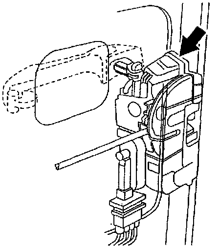

Operation CHARM
: Car repair manuals for everyone.
Home
>>
Volkswagen
>>
1997
>>
GTI (1H1) V6-2.8L (AAA)
>>
Repair and Diagnosis
>>
Body and Frame
>>
Locks
>>
Power Locks
>>
Power Door Lock Switch
>>
Locations
>>
Passenger's Door
Passenger's Door
F36, F59, F47, F114:
Component Location View
F114:

Component View
F114 Passenger's Door Central Locking System Switch
^
Microswitch is part of door latch/lock assembly